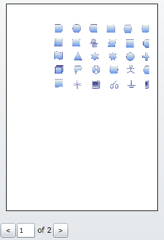
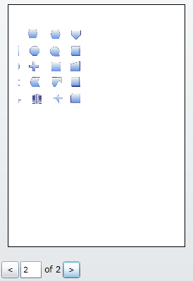
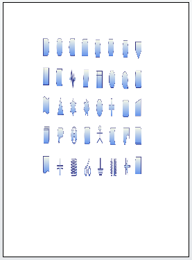
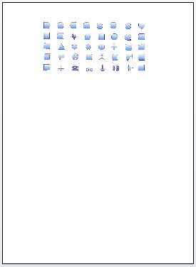
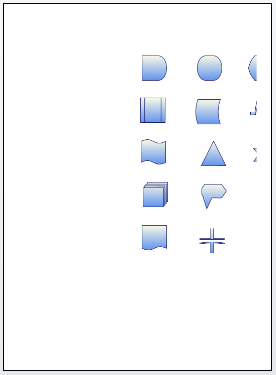

Features
This feature allows you to print a copy of the diagram page, using a print dialog box. The Print feature comes with two functionalities:
1. Print Dialog
The Print Dialog box is used to print the diagram page.
2. Print Preview
Print Preview is used to see how the page looks before taking a print out. The following are the options to customize the preview.
· Stretch support
· Page size
· Margins
Use Case Scenarios
You can see the output of the document before print the document, or diagram that you intend to print, using the print preview. This way, you will not have to take actual prints to see how it turns out.
Tables for Properties and Methods
Properties
Table 11: Properties Table
|
Property |
Description |
Type |
Value It Accepts |
Default Values |
Any other dependencies/ sub properties associated |
|
DiagramPrintDialog |
Gets or sets the width and height, margins and stretch of the page. |
CLR property. |
DiagramPrintDialog |
DiagramPrintDialog
|
No |
|
DocumentName |
Gets or sets the name of the printing document. |
Dependency Property
|
string |
string.Empty |
No |
|
CurrentPage |
Gets or sets which page is current page. |
Dependency Property
|
int |
1 |
No |
|
PageCount |
Gets the no. of pages to be printed. |
Dependency Property
|
int |
1 |
No |
|
PageHeight |
Gets or sets the page height. |
Dependency Property
|
double |
1169 |
No |
|
PageWidth |
Gets or sets the page width. |
Dependency Property
|
double |
827 |
No |
|
PageMargin |
Gets or sets the page margin(L,T,R,B) for printing page. |
Dependency Property
|
Thickness(left, top, right, bottom) |
Left - 50, Top - 50, Right - 50, Bottom - 50 |
No |
|
PageStretch |
Gets or sets the page stretch for printing document. |
Dependency Property
|
Stretch.Fill Stretch.None Stretch.Uniform Stretch.UniformTo Fill |
Stretch.Fill |
No |
Methods
Table 12: Methods Table
|
Method |
Description |
Parameters |
Return Type |
Reference links |
|
PrintDialog |
Print the diagram page using framework print dialog, without print preview. |
null |
void |
No |
|
PrintPreview |
This method is used to show the preview of the diagram to be printed. |
null |
void |
No |
Sample Link
To view the sample for this feature, follow the steps given below:
1. Open the Silverlight Sample Browser from the Dashboard.
2. Navigate to Diagram -> Static Diagram ->Print Demo
Adding Printing support for Diagram Page to an Application
PrintPreview
When you call the DiagramView’s PrintPreview method, you will see the Print Preview for the diagram in a child window.
The method is in the Diagram View and can be used through Code behind:
|
[C#] DiagramView diagramView = new DiagramView(); diagramView.PrintPreview(); |
|
[VB] Dim diagramView As New DiagramView() diagramView.PrintPreview() |
PrintPreview Customizations
You can customise the preview of the diagram using the following options:
· Page Stretch
· Page Size
· Page Margins
Page Stretch:
The Stretch property controls how a diagram is stretched to fill the page it’s on. It accepts the following values:
· None
· Fill
· Uniform
· UniformToFill
The default value is Fill.
The following images show the various output from the example and demonstrates the effect different Stretch settings have when applied to a diagram.
Different stretch settings:
· None: The diagram will not be stretched to fill the page area. If the diagram is larger than the page area, the diagram will be split into multiple pages. An option for navigation is provided in the print preview window to view one of the multiple pages.


Figure 135:PrintStretch = None in PrintPreview
· Fill: The diagram is scaled to fit the output area. Because the diagram’s height and width are scaled independently, the original aspect ratio of the diagram is not preserved. This means the diagram might be warped, if necessary, in order to completely fill the page area.

Figure 136:PrintStretch = Fill in PrintPreview
· Uniform: The diagram is scaled, while preserving its aspect ratio, so that it fits completely within the output area.

Figure 137: PrintStretch = Uniform in PrintPreview
· UniformToFill: The diagram is scaled so that it completely fills the page area while preserving the diagram's original aspect ratio.

Figure 138: PrintStretch = UniformToFill in PrintPreview
Page Size:
The Page size property shows how a diagram is resized. It uses the following values:
· PageHeight : To change or resize the height of the page. Its default value is 1169.
· PageWidth : You change or resize the width of the pageusing this value The default value is 827.
Page Margins:
The Page margin property is used to set the margin of the page. The Page margin property accepts the four values. That is Left, Top, Right, and Bottom.
The default is (50,50,50,50).
These properties are in DiagramPrinDialog in DiagramView and can be used through Code behind.
|
[C#] DiagramView diagramView = new DiagramView();
diagramView.DiagramPrintDialog.DocumentName = "Silverlight";
diagramView.DiagramPrintDialog.PageHeight = 1000; diagramView.DiagramPrintDialog.PageWidth = 800;
diagramView.DiagramPrintDialog.PageMargin = new Thickness(20,20,20,20);
diagramView.DiagramPrintDialog.PageStretch = Stretch.None;
diagramView.PrintPreview(); |
|
[VB] Dim diagramView As New DiagramView()
diagramView.DiagramPrintDialog.DocumentName = "Silverlight"
diagramView.DiagramPrintDialog.PageHeight = 1000 diagramView.DiagramPrintDialog.PageWidth = 800
diagramView.DiagramPrintDialog.PageMargin = New Thickness(20,20,20,20)
diagramView.DiagramPrintDialog.PageStretch = Stretch.None
diagramView.PrintPreview() |
Note: Printing works independently from PrintPreview, and shows the exact preview of the print out, but only when the printer settings and the PrintPreview settings (PageMargin, PageWidth, PageHeight) are the same.
PrintDialog
Prints can be made without having to go through a preview.
The diagram can be printed with a framework print dialog, i.e. without any preview (through code behind) as shown here:
|
[C#] DiagramView diagramView = new DiagramView(); diagramView.PrintDialog(); |
|
[VB] Dim diagramView As New DiagramView() diagramView.PrintDialog() |